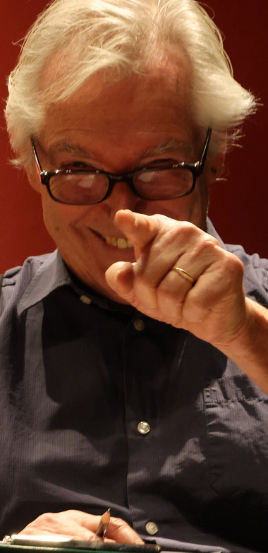

Reflexe
Beherzte und gewagte Gedanken
Notizen, Aufreger und Streuner — Werner Bodinek denkt laut über die Welt, die Bühne und das Dazwischen.
Streuner
Gedanken, die keinem festen Weg folgen — sie streunen durch den Alltag, bleiben kurz stehen, ziehen weiter.
Ach, ihr …
Ein Aufruf, eine Anrede, ein liebevoller Tadel an die Welt und ihre Eile.
Aufreger
Was sich nicht schweigend hinnehmen lässt: das Laute, das Ungerechte, das allzu Glatte.
Die einzelnen Texte werden hier nach und nach veröffentlicht.
